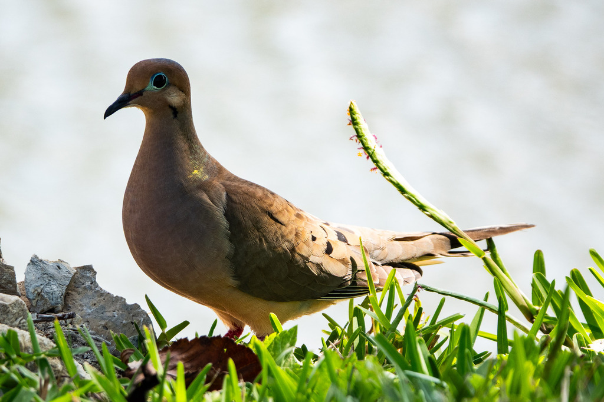

- A slim, soft gray-brown dove with a long pointed tail, giving a low mournful coo, is a mourning dove — one of the most abundant birds in North America.
- The sad-sounding call fools people into thinking they are hearing an owl. It is just the dove, and it is how the bird got its name.
- Listen when it takes off: the wings make a sharp whistling twitter. The sound is mechanical, made by the feathers, not the voice.
- It feeds almost entirely on seeds, picked off the ground, and can store a big load in its crop to digest later in a safe spot.
Soft gray-brown, with a few black spots on the wings and a pinkish wash on the breast.
Slim and streamlined, with a small head and a long, pointed tail edged in white.
Fast and direct, wings whistling on takeoff.
Often seen feeding on the ground or perched on wires.
The signature low, mournful "coo-OO-oo-oo-oo," most often heard at dawn and dusk, plus the whistling twitter of the wings in flight.
A trim, plain dove with a long pointed tail, either walking and pecking on open ground or perched quietly. The mournful coo and the whistling wing-twitter on takeoff confirm it.
Almost entirely seeds — grasses, weeds, and grains — gathered from the ground and stored in the crop to digest later.
On open lawns and paths, on wires and bare branches, and around any seeding plants. Listen for the mournful coo to locate one.
Year-round resident, present and calling in every season.
Watch and enjoy, and please do not feed park wildlife. Doves find plenty of seed on their own.


- © Rob Carr (CC-BY-NC), via iNaturalist
- © Ruby Meador (CC-BY-NC), via iNaturalist